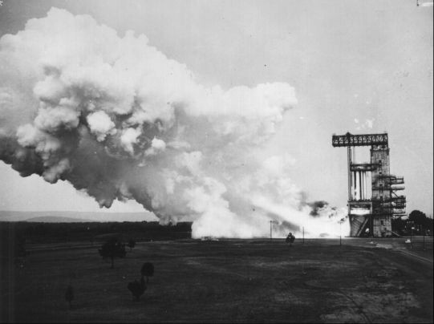
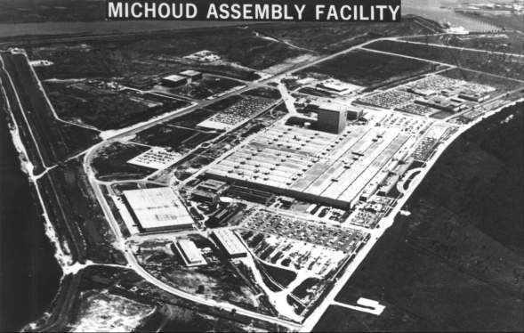
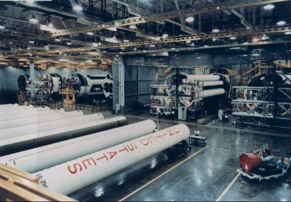
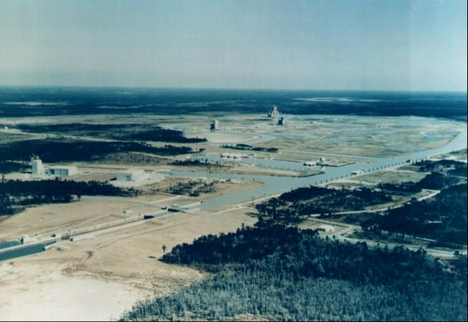
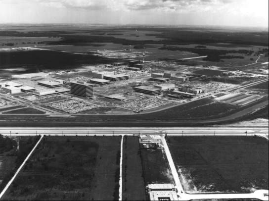

While the launch vehicle was being debated by committee after committee, Administrator Webb was making decisions on the numbers, kinds, and locations of the special facilities and real estate needed to launch men to the moon, Within five Months - from June to October 1961 - four new installations, all in the Gulf Coast states, had been added to NASA's far-flung domain.51

Booster stages for Redstone, Jupiter, and Saturn vehicles were tested at Redstone Arsenal near Huntsville, Alabama. Above, in 1960, Saturn C-1 first-stage engines are static-fired for the first time.
Although size of the launch vehicle for Apollo had still not been decided, everybody agreed it would be big, too big for the launch pads at the Cape. The first thing NASA needed was a more adequate spaceport. To fabricate and assemble the lower stages of whatever rocket was selected would require a huge manufacturing plant, preferably one already in existence. The agency would need additional land, separate from the spaceport but near the factory, to static-test the booster. Safety and noise considerations demanded an immense area that could contain not only the test stands but a buffer zone as well. And, finally, if Gilruth's team was to manage all manned space flight projects, as it had been assigned to do in January 1961, there would have to be a site for spacecraft engineering and development facilities.
The monstrous size envisioned for the launch vehicle and the need for these installations to be accessible to each other brought an additional factor into play. Since the booster would have to be transported by water, the agency would need ice-free waterways for year-round operations. NASA planners looked, logically, at the Gulf Coast, which had a temperate climate and an intercoastal waterway system. Two of the five states, Florida and Alabama, already had Apollo-oriented centers, which led to the reasoning that the new facilities should be situated nearby.52
Kurt H. Debus, as leader of NASA's launch operations (first for Wernher von Braun, then for all of the agency's flights from Cape Canaveral, Florida), had long dreamed of building a spaceport. In July 1961, he and Major General Leighton I. Davis, Commander of the Air Force Missile Test Center at the Cape, endorsed a report on eight proposed sites. Led by Major Rocco A. Petrone, Colonel Leonard Shapiro, and Colonel Asa B. Gibbs, the Debus-Davis study group evaluated Cape Canaveral (offshore); Cape Canaveral (onshore - Merritt Island); Mayaguana (in the Bahama Islands); Cumberland Island (off the southeastern coast of Georgia); Brownsville, Texas; Christmas Island; Hawaii; and White Sands, New Mexico. Only White Sands and Merritt Island were economically competitive, flexible, and safe enough to be considered further.53 On 24 August, NASA announced that it had chosen Merritt Island and that it would buy 323 square kilometers of land for the new NASA launch center.
Debus had well-thought-out ideas for mobile launch operations facilities: the big boosters would be assembled stacked vertically and checked out under protective cover and then moved to the launch pad. He drew up plans for personnel buildup, construction contracts, and administrative autonomy. On 7 March 1962, when Marshall's Launch Operations Directorate became NASA's Launch Operations Center, Debus was ready. (After the assassination of the President in November 1963, the new installation would be renamed the John F. Kennedy Space Center.)54
In Huntsville, von Braun viewed the facilities for an accelerated booster development program in a different light. His 6,000 employees were housed in part of the Army's Redstone Arsenal, on the Tennessee River. Although it was adequate for engineering development and static-testing of smaller rockets, the Marshall center could not handle the immense vehicles planned for the lunar voyage. Von Braun would need land and facilities elsewhere, but with access to the navigable waters of the Tennessee Valley Authority. A survey of government-owned war surplus plants revealed one near St. Louis and another (named Michoud) near New Orleans that were suitable for building the huge boosters. But the Mississippi River around St. Louis often froze over during the winter months. So Michoud, with a mammoth building that contained 0.17 square kilometers under one roof as part of a 3.5-square-kilometer complex along the water's edge, was selected on 7 September 1961.* Designed as a shipyard, it had become a cargo aircraft factory in 1943 and a tank engine plant during the Korean conflict. Here the Chrysler Corporation and The Boeing Company would construct the first stages of the Saturn C-1 and, later, of the C-3, C-4, or C-5 (or whatever model was chosen).55

To assemble the large Saturns, NASA needed a plant, preferably one already built. The Michoud facility (above), close to New Orleans, suited the requirements.

Inside Michoud in 1968 (above), Saturn IBs are on the assembly line.
Influencing the Michoud decision was the need for a test operations area nearby where acoustics could be managed and controlled, as well as logistics. Von Braun's team had always worried about the noise and vibration generated during static-testing (and so had the citizens of Huntsville). As boosters became larger, they became louder, and their low-frequency resonances threatened all kinds of structural damage. Using statistics gathered from Saturn C-1 decibel and vibration levels, acoustics experts estimated that the advanced Saturn would require a much larger buffer zone.
Marshall occupied only about 65 square kilometers of the more than 161-square-kilometer Redstone Arsenal, and the Army needed the rest of the land for its own rocket development and test programs. But even the whole expanse would not have been large enough for the superbooster. What NASA required was about 400 square kilometers. So large a purchase could be touchy if not properly handled. NASA officials worked through Congress, while site survey teams operated through the executive branch and administrative channels on a gargantuan land deal not far from Michoud. Lieutenant Colonel S. F. Berry, detailed to NASA's Office of Launch Vehicle Programs from the Army Corps of Engineers, helped the selection committee narrow the test site choices.56

When the Saturn booster grew in size, NASA obtained land in a less populated area, in Mississippi on the Pearl River near the Gulf of Mexico. In the 1968 photograph above, test stands appear beside the waterways.
On 25 October 1961, NASA announced that it would purchase outright 54 square kilometers in southwest Mississippi and obtain easement rights over another 518 square kilometers in Mississippi and Louisiana for the big booster static-test site. Simultaneously, the Justice Department filed suits of condemnation, under the law of eminent domain, in the United States District Courts in both states. The area, largely flat pine forest, was on the Pearl River, only 56 kilometers northeast of Michoud. Well suited to NASA's needs because of its deep-water access and low-density population, the Pearl River site was bought for about $18 million. While engineers at Marshall drew up specifications for static-test stands, canals, and storage areas, nearly 100 families, including the whole community of Gainsville, Mississippi, had to sell out and relocate. There were few complaints, as most of the residents were pleased at the prospect of new economic opportunities.57
Meanwhile, Ralph E. Ulmer and Paul G. Dembling, facilities and legal experts at NASA Headquarters, were saddled with most of the worries connected with the whirlwind activities of site scouting and selection for the manned space flight center. For example, Ames Research Center Associate Director John F. Parsons, who led the search for the spacecraft development center, reported to Dembling and Ulmer, and no one else, on the whereabouts of his team and its need for advice and support. Webb, Dryden, and Seamans referred all inquiries to Dembling, in an effort to avoid undue pressures from persons and groups trying to advance local prospects.58
On 13 and 14 September 1961, Webb and Dryden reviewed all the factors in selecting the site for manned space flight activities and decided to move that NASA function to Houston.** NASA announced the decision on 19 September 1961. Gilruth and his Space Task Group would soon have a home of their own to manage, a place in which to develop the payloads for future rockets. Webb called it "the command center for the manned lunar landing and follow-on manned space flight missions," intimating that an integrated mission control center would also be located in the Houston area.

Above is a 1964 photograph of the new Manned Spacecraft Center at Clear Lake near Houston.
Most Space Task Group "Virginians" - both native and otherwise - were not very happy over the prospect of a transfer to Texas. But NASA's opportunity to accept a politically arranged gift of four square kilometers of saltgrass pastureland was too good to refuse.*** Of course, there were the usual charges of undue political influence, largely from the areas that had been turned down. The fact that there were Texans in powerful political positions - Vice President Johnson and Congressman Albert W. Thomas (chairman of the House Independent Offices Appropriations Committee) - provided much of the ammunition for a brief barrage of critical newsprint. (Later, when NASA spent more than $1 million to acquire an additional two square kilometers for better frontage, the accusations of "special interests" were revived. But the Houston area met all the technical criteria for the new center. The seventh (soon to be sixth) largest city in the country, Houston had the utilities, transportation, and weather, as well as all the cultural, academic, industrial, and recreational specifications.59
Webb knew that facilities and construction were critical to success in landing on the moon during the 1960s. He called on the Army Corps of Engineers for assistance, rather than face the costly and time-consuming struggle of staffing a NASA office for this one-time task. The Corps would be invaluable in acquiring land at both Merritt Island and Michoud and in constructing new facilities at the Cape, at Michoud, and at Houston. Webb asked Lieutenant General W. K. Wilson, Chief of Engineers, to join him in this enterprise almost as a partner.60
Although the acquisition of real estate had demanded his close attention, the Administrator had never lost sight of the urgency of the Apollo launch vehicle and lunar landing mode questions. These needed to be resolved before the Corps of Engineers and NASA's facilities engineers could do very much about designing the supporting installations.61
* Although the Saturn versus Nova debates continued, the selection of Michoud ended all chances of clustering eight F-1 engines in the first stage - unless the plant roof were raised. The fact that only four or five barrels could be put together did not worry Marshall, as this number would be more than enough to support assembly in earth orbit, that center's favored mode. Proponents of direct flight had essentially lost their vehicle; but they continued to argue for another year, anyway.
** For details of procedures and the criteria on which the decision was based, see Appendix A.
*** Webb had written Gilruth in June 1961 that he seriously doubted NASA would be permitted to establish any large activity including several thousand more people in the Virginia area. Although no commitment had been made, Webb had learned from Congressman Thomas that Rice University in Houston had set aside 15 square kilometers of land for a research institution. Its location near the Houston ship channel made it highly desirable for NASA. Earlier, Don Ostrander had recommended to Seamans that the Space Task Group be moved to and combined with Marshall in Huntsville.
51. Robert L. Rosholt, An Administrative History of NASA, 1958–1963, NASA SP-4101 (Washington, 1966), pp. 198-239.
52. William E. Lilly, "Facilities in Support of Manned Space Flight," in Proceedings of the Second NASA-Industry Program Plans Conference, February 11–12, 1963, NASA SP-29 (Washington, 1963), pp. 51-59.
53. The "Debus-Davis Study" was officially titled "NASA-DOD Joint Report on Facilities and Resources Required at Launch Site to Support NASA Manned Lunar Landing Program," Phase I Rept., 31 July 1961.
54. Seamans TWX to all NASA field elements, 24 Aug. 1961; "Agreement between DOD and NASA Relating to the Launch Site for the Manned Lunar Landing Program," signed by Webb and Roswell Gilpatric on 24 Aug. 1961; Seamans to Lt. Gen. W. K. Wilson, Jr., 21 Sept. 1961; Webb to Wilson, 22 Sept. 1961; Launch Operations Directorate, "Study: Feasibility of Relocation from Cape Canaveral to Merritt Island, NASA Launch Operations Directorate Industrial Facilities and Apollo Spacecraft Mission Support Facilities," December 1961; Francis E. Jarrett, Jr., and Robert A. Lindemann, "Historical Origins of the Launch Operations Center to July 1, 1962," draft ed., KSC Historical Monograph 1, December 1964; [Gordon L. Harris], The Kennedy Space Center Story (Kennedy Space Center, Fla., January 1969); Angela C. Gresser, "Historical Aspects Concerning the Redesignation of Facilities at Cape Canaveral," KSC Historical Note 1, April 1964.
55. Fleming notes, 31 July 1961; David S. Akens et al., "History of the George C. Marshall Space Flight Center from July 1 to December 31, 1961," 1, MSFC Historical Monograph 4, March 1962, pp. 37-41; "Michoud Assembly Facility," MSFC fact sheet, 20 July 1965; NASA, "NASA Selects New Orleans Plant for Space Vehicle Assembly," news release 61-201, 7 Sept. 1961; William Zigler, "History of NASA MTF and Michoud: The Fertile Southern Crescent: Bayou Country and the American Race into Space," NASA HHN-127, September 1972, pp. 15-16, 25.
56. Leo L. Jones, "A Brief History of Mississippi Test Facility, 1961–1966," pp. 1-11; NASA, "NASA Selects Launch Vehicle Test Site," news release 61-236, 25 Oct. 1961.
57. NASA, "NASA Selects Test Site"; Jones, "Brief History."
58. Silverstein to Admin., NASA, "proposed site selection criteria and site survey team for the proposed manned spacecraft center," n.d.; John F. Parsons et al., "Final Report of the Site Survey Team for a Manned Space Flight Laboratory," September 1961; Paul G. Dembling, interview, Washington, 25 Sept. 1969; U.S. Army, "Army Engineers Award Contract for Initial Construction of NASA Manned Spacecraft Center at Houston," news release, 29 March 1962.
59. Webb, memo for the President, no. subj., 14 Sept. 1961; ibid., 14 Sept. 1961, with enc., "Site Selection Criteria"; T. Keith Glennan to Rep. Albert W. Thomas, "Construction of Laboratory near Houston, Texas," 3 Nov. 1958; Ostrander to Seamans, "Reflections on the Present American Posture in Space," 21 April 1961; Webb to the Vice President, no subj., 23 May 1961; Webb to Gilruth, 14 June 1961; Robert B. Memifield, "Men and Spacecraft: A History of the Manned Spacecraft Center (1958–1969)," draft, pp. III-22 to III-33; Stephen B. Oates, "NASA's Manned Spacecraft Center at Houston, Texas," Southwestern Historical Quarterly 67, no. 3 (January 1964): 350-75; Gilruth to staff, "Location of new site for Space Task Group," 19 Sept. 1961, with enc., "Manned Space Flight Laboratory Location," draft news release 61-207; NASA, "Manned Space Flight Laboratory Location Study Completed," news release 61-207, 19 Sept. 1961; Col. R. P. West to NASA Spacecraft Center, 5 Jan. 1962; Dryden and Seamans to Admin., NASA, "Requirement for a 1,600-acre Site for the Manned Spacecraft Center," 5 Feb. 1962; R. A. Diaz to MSC, Attn.: Gilruth, "Acquisition of 600 acres of additional land for the Manned Spacecraft Center, Houston, Texas," 16 Feb. 1962; Webb to George R. Brown, 23 Feb. 1962; John A. Johnson to Chief of Engineers, Attn.: Frederick M. Figert, 23 Feb. 1962.
60. Webb to Wilson, 22 Sept. 1961.
61. See Webbs' foreword in Rosholt, Administrative History, pp. iii-vi.